[TOC]
0. 前言
大三下，只剩一门数据库原理课程考试了，趁复习之际，我打算对数据库内容知识进行简单总结。
实习面试时，曾倍受不懂数据库之苦。虽然以前接触过MySQL等数据库，但并没有深入了解和研究，对其原理更是雾里看花。
而随着数据库原理课程步步深入的讲解，才终于揭开数据库神秘的面纱。
贯彻全文例子的数据表：
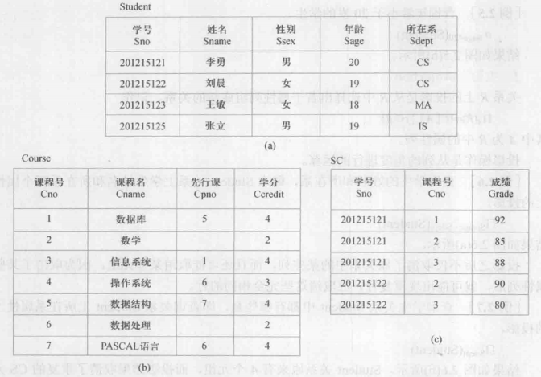
1. 关系数据库
关系数据库（Relational database），是创建在关系模型基础上的数据库，借助于集合代数等数学概念和方法来处理数据库中的数据。
它于1970年由埃德加·科德（E.F.Codd）提出，开创了数据库系统的新纪元。
当今，很多传统数据库，都属于关系数据库，比如：MySQL、Oracle等。而redis等新型数据库，则是非关系型数据库。
关系模型分为三部分：
- 关系数据结构
- 关系操作集合
- 关系完整性约束
1.1. 关系
关系模型的数据结构非常简单，即关系——一张扁平的二维表。
关系的定义如下：
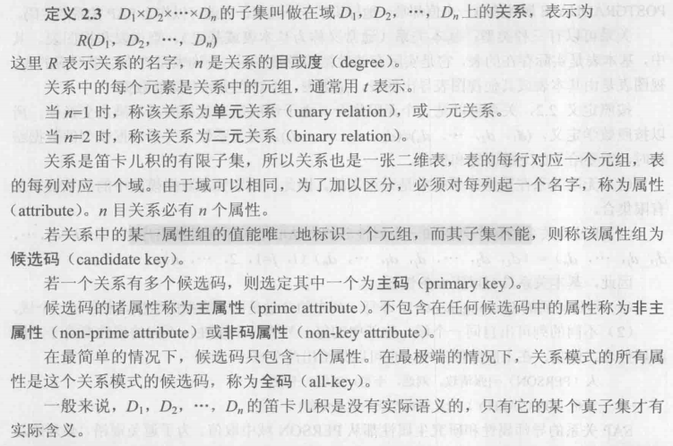
- 关系的目或度
n，即为二维表的列属性； - 关系的元组
t，即为二维表的行。
1.2. 关系操作
增删改查，其中查询最为关键和复杂。
早期的关系查询操作通常用代数方式或逻辑方式表示，分别称为关系代数和关系演算。
后来，出现了一种介于关系代数和关系演算之间的结构化查询语言（SQL）。
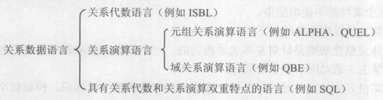
1.3. 关系的完整性
关系模型的完整性约束分为三类：
- 实体完整性，即主键。
- 参照完整性，即外键。
- 用户定义的完整性，即
NOT NULL等。
1.4. 关系代数
关系代数是一种抽象的查询语言，用对关系的运算来表达查询。其运算符如下：
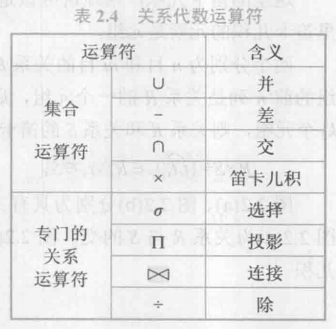
具体知识点不予介绍，关系代数示例如下：
- 1 查询年龄不等于20岁的学生信息
$\sigma_{Sage!=20}(Student)$
- 2 查询选修1号课程的学生学号
$\pi_{Sno}(\sigma_{Cno=1}(SC))$
- 3 查询既选修1号课程又选修2号课程的学生学号
$\pi_{Sno}(\sigma_{Cno=1}(SC)) \bigcap \pi_{Sno}(\sigma_{Cno=2}(SC))$
1 | (select sno from sc where cno=1) |
- 4 查询不选1号课程的学生学号
$\pi_{Sno}(Student) - \pi_{Sno}(\sigma_{Cno=1}(SC))$
1 | select sno from student |
查询所有课程成绩大于等于85分的学生学号
$\pi_{Sno}(SC) - \pi_{Sno}(\sigma_{Grade<85}(SC))$
1 | (select sno from sc) |
- 5 查询选修1号课程的学生学号和姓名
$\pi_{Sno,Sname}(\sigma_{Cno=1}(SC \times Student)$
1 | select student.sno, student.sname |
$\pi_{Sno,Sname}(\sigma_{Cno=1}(SC \bowtie Student))$
1 | select student.sno, student.sname |
- 6 查询所有选课成绩均及格的学生学号和姓名
$\pi_{Sno,Sname}(\sigma_{Grade \geq 60}(SC \bowtie Student))$
1 | select sno, sname from student natural join sc where grade >= 60; |
- 7 查询选修了全部课程的学生学号和姓名
$(\pi_{Sno,Cno}(SC) \div \pi_{Cno}(Course)) \bowtie \pi_{Sno, Sname}(Student)$
- 8 查询至少选修2门不同课程的学生学号
$\pi_{Sno}(\sigma_{SC1.Sno = SC2.Sno \bigwedge SC1.Cno!=SC2.Cno}(SC1 \times SC2))$
1 | select sno, count(cno) con_count |
- 9 查询选课成绩最高的学生学号和成绩
$X = \pi_{Grade}(SC) - \pi_{SC1.Grade}(SC1 \bowtie_{SC1.Grade < SC2.Grade} SC2)$
$\pi_{Sno, Grade}(X \bowtie SC)$
1 | select sno, grade |
- 1 查询所有男同学的信息
$\sigma_{Ssex=’男’}(Student)$
1 | select * from student where ssex='男'; |
- 2 查询选修1号或2号课程的学生选课信息
$\sigma_{Cno=1 \bigvee Cno=2}(SC)$
1 | select * from sc where cno=1 or cno=2; |
- 3 查询计算机系（CS）的男同学的学号和姓名
$\pi_{Sno, Sname}(\sigma_{Ssex=’男’ \bigwedge Sdept=’CS’}(Student)))$
1 | select sno, sname from student where ssex='男' and sdept='CS'; |
- 4 查询选修“数据库”课程的学生学号
$\pi_{Sno}(\sigma_{Cname=’数据库’}(Course \bowtie SC))$
1 | select sno |
- 5 查询选修“数据库”课程的学生学号和姓名
$\pi_{Sno, Sname}(\sigma_{Cname=’数据库’}(Course \bowtie SC \bowtie Student))$
1 | select sno,sname |
- 6 查询没有选修全部课程的学生学号
$\pi_{Sno}(\pi_{Sno,Cno}(Student \times Course) - \pi_{Sno,Cno}(SC))$
1 | select distinct sno from |
$\pi_{Sno}(Student) - (\pi_{Sno, Cno}(SC) \div \pi_{Cno}(Course))$
- 7 查询没有选修全部课程的学生学号和姓名
$\pi_{Sno}(\pi_{Sno,Cno}(Student \times Course) - \pi_{Sno,Cno}(SC)) \bowtie \pi_{Sno, Sname}(Student)$
$(\pi_{Sno}(Student) - (\pi_{Sno, Cno}(SC) \div \pi_{Cno}(Course))) \bowtie \pi_{Sno, Sname}(Student)$
1.5. 关系演算
关系演算则以数理逻辑中的谓词演算为基础。
具体内容不做介绍。示例如下：
- 1 试用元组关系演算语言ALPHA完成：查询计算机系（CS）的男同学的学号和姓名
$GET \ W (Student.Sno, Student.Sname): Student.Sdept=’CS’ \bigwedge Student.Ssex=’男’$
- 2 试用元组关系演算语言ALPHA完成：查询选修“数据库”课程的学生学号
$RANGE \ Course \ CX$
$GET \ W (SC.Sno): \exists CX (CX.Cno=SC.Cno \bigwedge CX.Cname=’数据库’)$
- 3 试用元组关系演算语言ALPHA完成：查询所有选课成绩均及格的学生学号和姓名
$RANGE \ SC \ SCX$
$GET \ W (Student.Sno, Student.Sname): \forall SCX (SCX.Sno=Student.Sno \Longrightarrow SCX.Grade>=60)$
正确：
$RANGE \ SC \ SCX$
$GET \ W (Student.Sno, Student.Sname): \exist SCX (SCX.Sno = Student.Sno) \bigwedge \forall SCX (SCX.Sno=Student.Sno \Longrightarrow SCX.Grade>=60)$
- 4 试用元组关系演算语言ALPHA完成：查询有两个人以上选修的课程号和课程名
$RANGE \ SC \ SCX$
$\quad \quad \quad \quad \ SC \ SCY$
$GET \ W (Course.Cno, Course.Cname): \exist SCX \ \exist SCY (SCX.Cno=Course.Cno \bigwedge SCY.Cno=SCX.Cno \bigwedge SCX.Sno \neq SCY.Sno)$
2. 关系数据库标准语言 SQL
2.1. 数据定义
包括模式（库）、表、视图、索引的增删改：
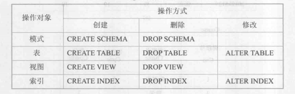
2.2. 数据查询
主要为select语句，select为SQL语句的重中之重，包括单表查询、连接查询、嵌套查询、集合查询、基于派生表查询等主要内容。
其一般格式如下：
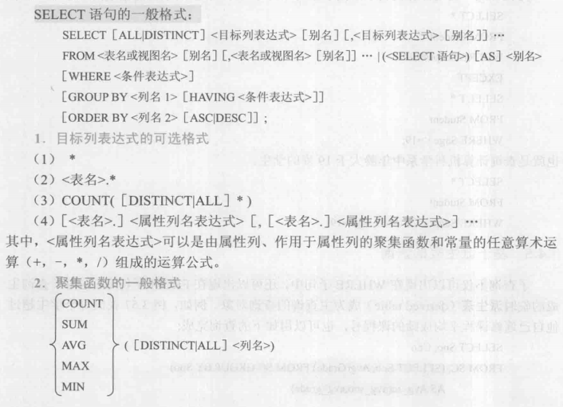
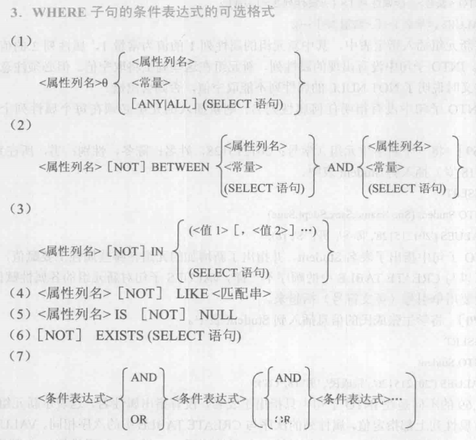
2.3. 数据更新
主要为insert、update、delete语句。
较为简单，不予详说。
2.4. 视图
视图是建立在查询语句上的一张虚拟表，可直接查询视图，查询时会自动执行视图定义中的查询语句。
视图可以有创建、增删改查操作。
视图创建格式如下：
增删改查则与普通表相同。
2.5. SQL 示例
2.5.1. SQL定义功能、数据插入
2.5.1.1. 建立教学数据库的三个基本表
S(Sno,Sname,Sgender,Sage,Sdept) 学生（学号，姓名，性别，年龄，系）
1 | create table S ( |
SC(Sno,Cno,Grade) 选课（学号，课程号，成绩）
1 | create table SC ( |
C(Cno,Cname,Cpno,Ccredit) 课程（课程号，课程名，先行课，学分）
1 | create table C ( |
2.5.1.2. DROP TABLE、ALTER TABLE、CREATE INDEX、DROP INDEX 及INSERT语句输入数据
删除表：
1 | drop table SC; |
修改表：
1 | ALTER TABLE C ADD UNIQUE(Cname); |
创建索引：
1 | CREATE UNIQUE INDEX SCno ON SC(Sno ASC, Cno DESC); |
删除索引：
1 | DROP INDEX SCno; |
插入数据：
1 | INSERT INTO S values(201215121,'李勇','男',20,'CS'); |
2.5.2. 数据查询
2.5.2.1．查询选修1号课程的学生学号与姓名
1 | select S.Sno, S.Sname |
2.5.2.2．查询选修课程名为数据库的学生学号与姓名
1 | select S.Sno, S.Sname |
2.5.2.3．查询不选1号课程的学生学号与姓名
1 | (select S.sno, S.sname |
2.5.2.4．查询学习全部课程学生姓名
1 | select Sname from S where not exists ( |
2.5.2.5．查询所有学生除了选修1号课程外所有成绩均及格的学生的学号和平均成绩，其结果按平均成绩的降序排列
1 | select sno, avg(grade) from ( |
2.5.2.6．查询选修数据库成绩第2名的学生姓名
1 | select S.sname, SC.grade |
2.5.2.7. 查询所有3个学分课程中有3门以上（含3门）课程获80分以上（含80分）的学生的姓名
1 | select S.sname, count(SC.cno) |
2.5.2.8. 查询选课门数唯一的学生的学号
1 | select * from ( |
2.5.2.9. SELECT语句中各种查询条件的实验
between
1 | select Sno, Sname, Sage from S where Sage between 19 and 20; |
in
1 | select Sno, Sname, Sdept from S where Sdept in ('CS', 'IS'); |
like
1 | select Sno, Sname, Ssex from S where Sname like '刘%'; |
is NULL/is not NULL
1 | select * from C where Cpno is NULL; |
1 | select * from C where Cpno is not NULL; |
< any/>= all
1 | select * from SC where grade < any (select grade from SC); |
1 | select * from SC where grade >= all (select grade from SC); |
2.5.3. 数据修改、删除
2.5.3.1. 把1号课程的非空成绩提高10％
1 | update SC set grade=grade*1.1 where cno=1 and grade is not null; |
2.5.3.2. 在SC表中删除课程名为数据库的成绩的元组
1 | delete from SC where cno in ( |
2.5.3.3. 在S和SC表中删除学号为201215121的所有数据
1 | delete from SC where sno=201215121; |
2.5.4. 视图的操作
2.5.4.1. 建立男学生的视图，属性包括学号、姓名、选修课程名和成绩
1 | create view S_SC_C_man |
2.5.4.2. 在男学生视图中查询平均成绩大于80分的学生学号与姓名
1 | select sno, sname |
3. 关系数据库理论 - 范式
关系数据理论主要讨论：如何设计一个好的数据库模式，即如何构造一个好的数据表。主要方法是：使用范式对表进行规范化。
在引出范式之前，需要讨论一下数据依赖和码的概念。
3.1. 数据依赖
数据依赖是一个关系内部属性与属性之间的一种约束关系，其中最重要的是：
- 函数依赖（FD）
- 多值依赖（MVD）
3.1.1. 函数依赖
函数依赖：
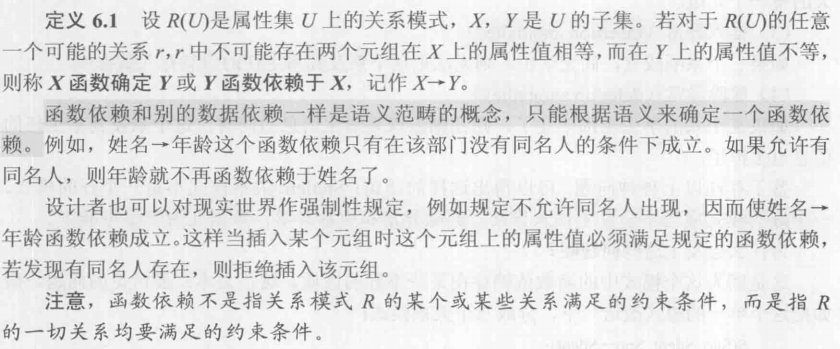
完全函数依赖、部分函数依赖、传递函数依赖：
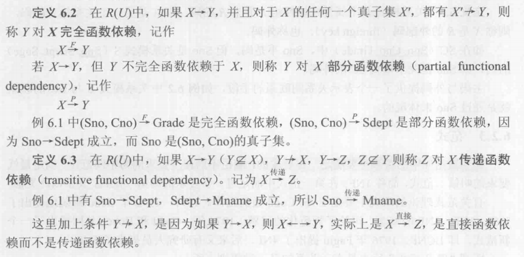
3.1.2. 多值依赖
示例：
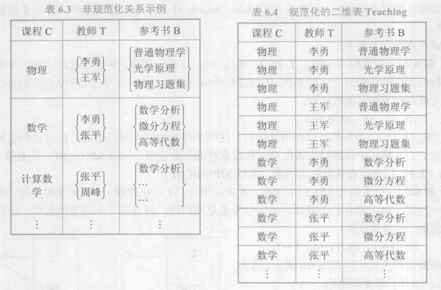
定义：
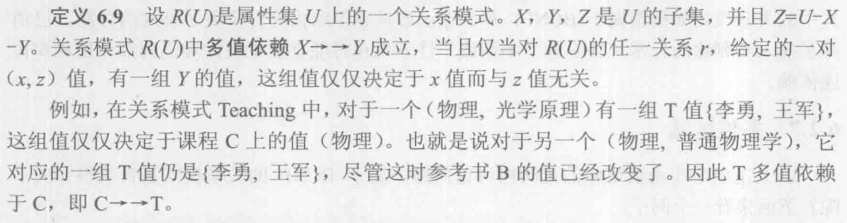
3.2. 码
候选码、超码、主码、全码：
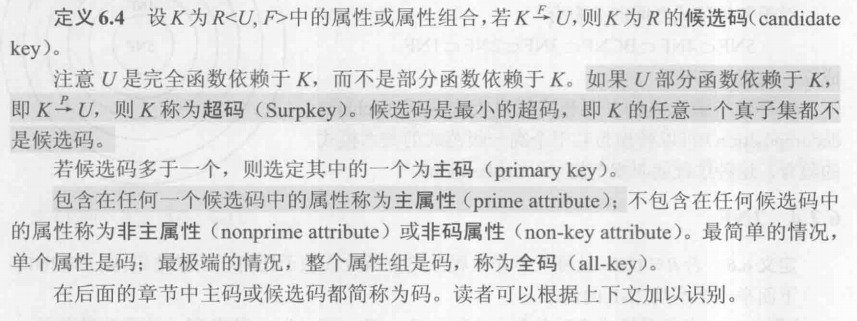
注意：所有属性都完全函数依赖于候选码。
外码：
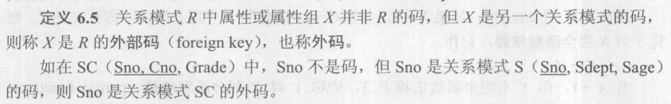
3.3. 第一范式 - 1NF
定义：每个属性必须是不可分的数据项。
第一范式是关系的基本条件。
3.4. 第二范式 - 2NF
定义：若关系模式 $R \in 1NF$，且每一个非主属性完全函数依赖于任何一个候选码，则 $R \in 2NF$。
简而言之：不存在非主属性对码的部分函数依赖。
3.5. 第三范式 - 3NF
定义：若关系模式 $R \in 1NF$，且不存在这样的码 $X$、属性组 $Y(Y \not\rightarrow X)$ 及非主属性 $Z(Z \not\subseteq Y)$，使得 $X \rightarrow Y, Y \rightarrow Z$ 成立，则 $R \in 3NF$。
简而言之：不存在非主属性对码的函数传递依赖。
3.6. BCNF
定义：关系模式$R \in 1NF$，若 $X \rightarrow Y$ 且 $Y \not\subseteq X$ 时 $X$ 必含有码，则$R \in BCNF$。
3.7. 4NF
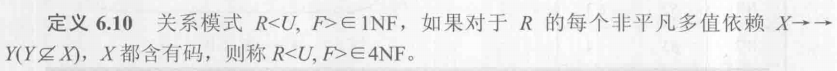
3.8. 数据依赖的公理系统
数据依赖的公理系统是模式分解算法的理论基础，下面介绍一个有效而完备的公理系统——Armstrong公理系统。
逻辑蕴含：
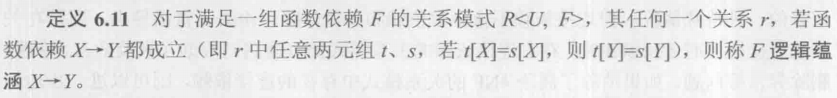
Armstrong公理系统的推理规则：
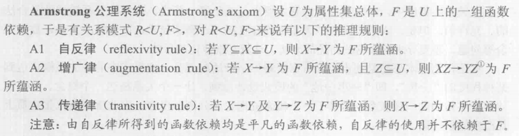
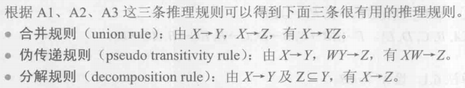
最小依赖集：
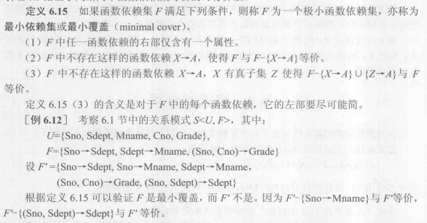
4. 事务
4.1. 基本概念
事务是用户定义的一个数据库操作序列，这些操作要么全做，要么全部做，是一个不可分割的单位。
事务通常以 BEGIN TRANSACTION 开始，以 COMMIT（提交，提交事务的所有操作）或 ROLLBACK（回滚，撤销事务中所有已完成的操作）结束。
4.2. 事务的ACID特性
事务具有4个特性：
原子性（Atomicity），事务中的所有操作要么都做，要么都不做。
一致性（Consistency），事务执行的结果必须是使数据库从一个一致性状态变到另一个一致性状态。如果数据库系统运行中发生故障，有些事务尚未完成就被迫中断，这些未完成的事务对数据库所做的修改有一部分已经写入物理数据库，这时数据库就处于不一致的状态。一致性与原子性密切相关。
隔离性（Isolation），一个事务的执行不能被其他事务干扰。
持续性（Durability），一个事务一旦提交，它对数据库中数据的改变就是永久性的，
5. 并发控制
事务是并发控制的基本单位，并发控制的目的即保证事务的隔离性和一致性。
并发控制的主要技术有：封锁（locking）、时间戳（timestamp）、乐观控制法（optimistic scheduler）和多版本并发控制（MVCC）。
其中，主要讲解基本的封锁方法。
5.1. 并发操作可能产生的问题
丢失修改（lost update，写与写冲突）：两个事务T1和T2读入同一个数据并修改，T2提交的结果破坏了T1提交的结果，导致T1的修改被丢失。
脏读（dirty read，读到未提交写）：事务T1修改某一数据并将其写回磁盘，事务T2读取同一数据后，T1由于某种原因被撤销，此时T1修改过的数据恢复原值，T2读到的数据就与数据库中的数据不一致，为“脏数据”。
不可重复读（non-repeatable）：
- 事务T1读取某一数据后，T2对其进行修改，当T1再次都该数据时，得到与前一次不同的值。
- 事务T1按一定条件从数据库中读取了某些数据记录后，T2删除了其中部分记录，当T1再次读取时，发现某些记录神秘地消失了。
- 事务T1按一定条件从数据库中读取了某些数据记录后，T2插入了一些记录，当T1再次读取时，发现多了一些数据。
- 后两种不可重复读也被称为幻影（phantom row）现象/幻读。
示例：
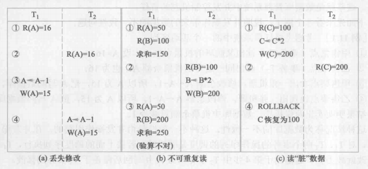
5.2. 封锁
封锁就是：在对某个数据对象操作之前，先对其加锁。
主要有两种锁：
- 排他锁（X锁，写锁）
- 共享锁（S锁，读锁）
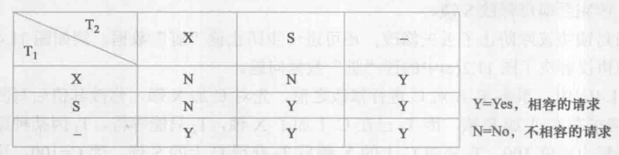
5.3. 封锁协议
运用X锁和S锁时，还需约定一些规则，例如：何时申请X锁或S锁、持锁时间、何时释放等，这些规则称为封锁协议（locking protocol）。
5.3.1. 一级封锁协议
事务T在修改数据R之前必须对其加X锁，直到事务结束才释放。
一级封锁协议可防止丢失修改；但由于读数据不加锁，则不能保证脏读和可重复读。
5.3.2. 二级封锁协议
在一级封锁协议的基础上，增加事务T在读取数据R之前必须先对其加S锁，读完后即可释放S锁。
二级封锁协议防止了丢失修复和脏读，但不能保证不可重复读。
5.3.3. 三级封锁协议
在一级封锁协议的基础上，增加事务T在读取数据R之前必须先对其加S锁，直到事务结束才可释放S锁。
三级封锁协议防止了丢失修复、脏读和不可重复读。
5.3.4. 不同级别的封锁协议和一致性保证
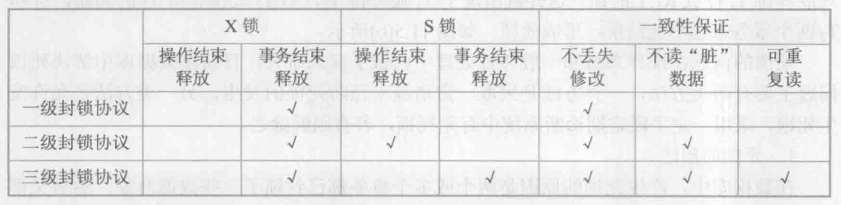
5.4. 并发调度的可串行性
由于数据库事务是并发的，所以不同的事务调度可能会产生不同的结果，比如：
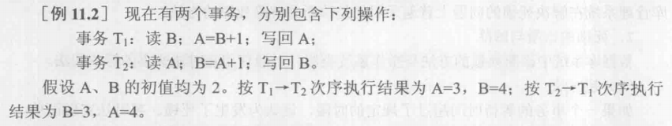
那么什么样的调度是正确的呢？显然，串行调度是正确的，执行结果等价于串行调度结果的调度也是正确的，这样的调度叫做可串行化调度。
那么又如何判断一个调度是否为可串行化调度呢？
首先，需要引出：冲突操作是指不同事务对同一个数据的读写和写写操作，如下：
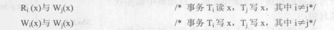
在一个调度中，不同事务的冲突操作和同一事务的两个操作是不能交换的。
如果一个调度Sc，通过交换两个事务不冲突操作的次序，得到另一个调度Sc1，且Sc1是串行的，则称Sc为冲突可串行化调度，即可串行化调度。
举例：
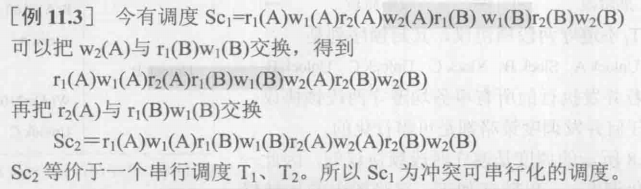
5.5. 两段锁协议
为了保证并发调度的正确性，数据库采用 两段锁协议（2PL） 实现并发调度的可串行性。
所谓两段锁，是指事务分为两个阶段：
- 第一阶段获得封锁，事务可以申请获得任何数据上的任何类型锁，但不能释放任何锁；
- 第二阶段释放封锁，事务可以释放任何数据上的任何锁，但是不能再申请锁。
事务遵守两段锁协议是可串行化调度的充分条件。